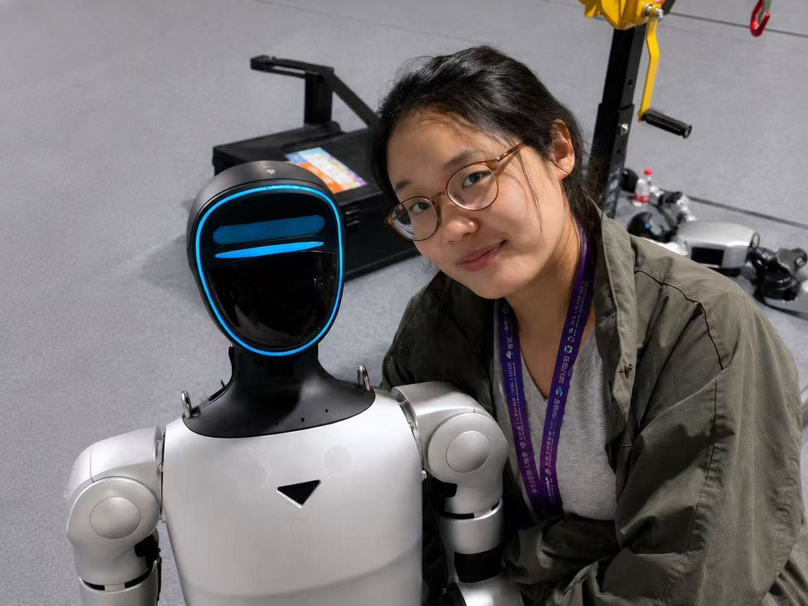

Multimodal affective computing
Combining speech, audio, text, facial expressions and movement for emotion recognition and human-state analysis.
MULTIMODAL AI · SPEECH · AFFECTIVE COMPUTING
I’m Xiaotong He. My research brings together language, speech and physiological signals to understand human emotion and support human–robot interaction.
● Paris, France / MSc · Paris-Saclay

01 / RESEARCH
From language and linguistics to AI and robotics, I work across disciplines to make sense of how people communicate, move and feel.
Combining speech, audio, text, facial expressions and movement for emotion recognition and human-state analysis.
Multilingual NLP, corpus analysis and speech-based evidence for human-centered applications.
Wearable EMG–IMU sensing, pose estimation and assistive robotics for interaction and rehabilitation.
02 / PUBLICATIONS
Conference papers & journal articles
2025–2026
IEEE Conference on Telepresence · Bristol, United Kingdom
WRC SARA · Beijing, China
IEEE Conference on Telepresence · Bristol, United Kingdom
WRC SARA · Beijing, China
Best Student Paper AwardIEEE ARM · Paris, France
Signal, Image and Video Processing · 19(9), 769
Biomimetics · 10(7), 431
03 / SELECTED PROJECTS
AI & REHABILITATION 2025–2026
Designed a multi-sensor system for gait recognition and biomechanical analysis, applying closed-loop control to assistive exoskeletons and simulators.
ROBOTICS 2025
Developed a Python system with OpenPose for human pose estimation and real-time motion imitation by a simulated robot in CoppeliaSim.
NATURAL LANGUAGE PROCESSING 2024–2025
Collected and analyzed 166,741 occurrences in a Chinese corpus. Built a web-based co-occurrence analysis system with Bash, Jieba and data visualization.
View project ↗AFFECTIVE COMPUTING 2025
Developed a PyTorch-based fusion system combining audio, text, pose and facial expressions for multimodal emotion recognition.
04 / EXPERIENCE
MAR – SEP 2026 · FRANCE
IBISC Lab · Université Paris-Saclay
Researched multimodal affective computing for human–computer and human–robot interaction, integrating speech, audio, EMG, IMU and motion signals. Research resulted in five conference papers, including a WRC SARA Best Student Paper Award.
SEP 2024 – MAR 2025 · CHINA
Shanghai International Studies University · French Team Lead
Led the French team on a corpus development project under Professor Hu Kaibao. Processed 154 French metadata records covering 154,000 tokens.
JUL 2022 – MAY 2024 · CHINA
Institute of Bionic Research · Jilin University
Developed an end-to-end multilingual NLP system based on LLaMA 3 using Python and Hugging Face, with preprocessing pipelines using langdetect, spaCy and Jieba.
05 / EDUCATION & TOOLKIT
2025–2026
University of Evry Paris-Saclay · Mention bien
2024–2025
Paris Nanterre, Sorbonne-Nouvelle & Inalco · Mention assez bien
2018–2022
Weifang University · GPA 3.84/5.00
JUN–JUL 2026
Télécom Paris
06 / GET IN TOUCH
For research collaborations and professional opportunities in
multimodal AI, speech processing and robotics.